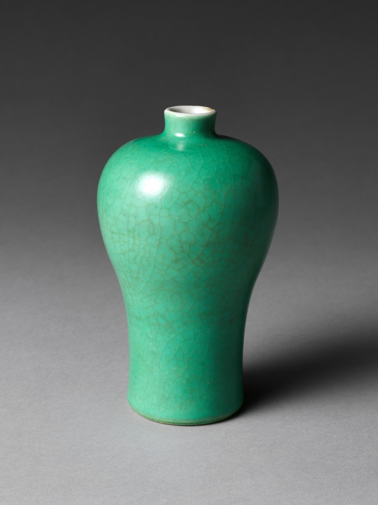
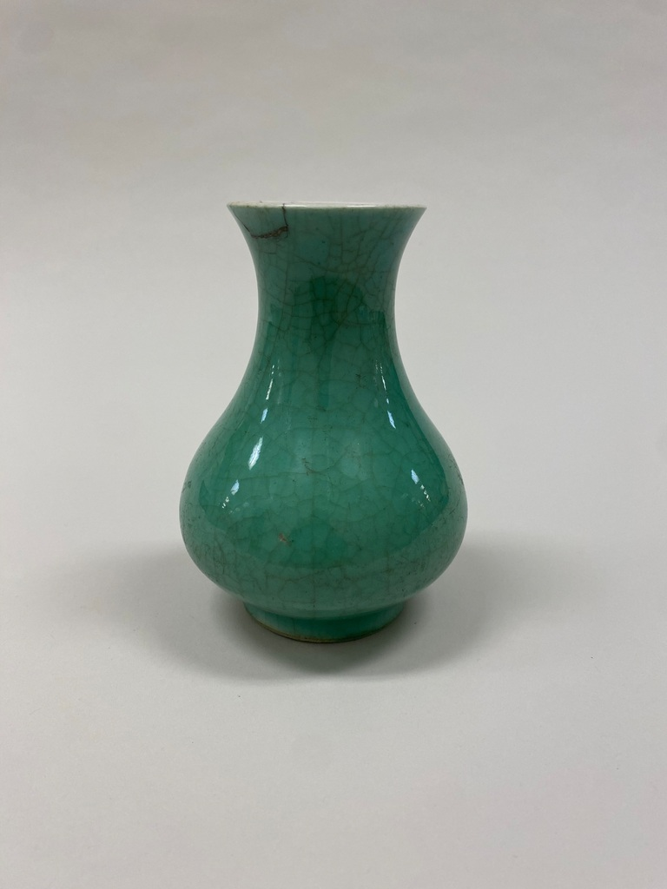

Curio · Q&A
The wider opening got the higher score.
Query: “Green narrow-mouth porcelain vase”
Required checks for this query
| Condition | Pass rule |
|---|---|
| Type and material | Catalogue record and photo agree |
| Green surface | Green is visible; HSV coverage ≥ 50% |
| Narrow opening | Visual question: support ≥ 0.80 and counter-evidence < 0.20 |
| Opening width | Rim-to-body width ratio ≤ 35% in the photo |
Every condition must pass. A mismatch or missing evidence means rejection.


The wider vase was rejected by the 35% width rule. We measure this ratio in the photo, so it can change with the camera angle.
Photos: The Metropolitan Museum of Art · 42228 and 46546The Hong Kong Polytechnic University